library(ggplot2)
library(kableExtra)
library(tidyverse)
library(cowplot)
library(car) # for diagnostic tests and VIF
library(broom) # to convert model outputs to tidy format
library(psych) # to use describe for tables and for pairs.panels
library(ggcorrplot) # for correlation plots
library(ggExtra) # for marginal histograms
library(caret) # for cross validation to assess overfitting
library(emmeans) # for calculating marginal means and contrasts from models
library(ggfortify) # for making ggplot images from plot diagnosticsPart 1: What is a linear model? What is a non-linear model?
The linear model
When statisticians say “linear model,” they mean linear in parameters, not linear in the relationship between variables. What does this mean?
A model is linear in parameters when it can be written as Y = β₀ + β₁X₁ + β₂X₂ + … + βₚXₚ + ε, where each parameter (β) appears exactly once and is multiplied by a variable or constant. This allows construction of a design matrix where Y = Xβ + ε, enabling direct mathematical calculation of an explicit solution.
Critically, a linear model can still produce curved relationships, as in the examples below:
Y = β₀ + β₁X + β₂X² – quadratic - still linear in parameters!
Y = β₀ + β₁log(X) + β₂sin(X) – curved - still linear in parameters!
Y = β₀ + β₁X₁ + β₂X₂ + β₃X₁X₂ – interactions - still linear in parameters!
Y = β₀X^β₁ – power-law - becomes linear: log(Y) = log(β₀) + β₁log(X)
Y = β₀e^(β₁X) – exponential - becomes linear: log(Y) = log(β₀) + β₁X
The non-linear model
True non-linear models have parameters that interact with each other or appear in complex ways, making it impossible to construct a simple design matrix. These models require iterative estimation algorithms that may fail to converge, thus leaving you with no solution:
Y = β₀(1 - e^(-β₁β₂X)) – parameters β₁ and β₂ multiply within the exponential
Y = β₀ + β₁X / (β₂ + X) – Michaelis-Menten: parameters β₁ and β₂ interact nonlinearly
Y = β₀(1 - e^(-β₁β₂X)) – parameters β₁ and β₂ multiply within the exponential
What are the advantages of linear models?
Linear models dominate statistics because they offer several types of major practical advantages:
Mathematical: Their explicit mathematical solution guarantees a unique solution and unbiased estimators.
Computational: Instant estimation even with millions of observations, available in all software packages, and no convergence issues.
Interpretability: Each coefficient has a clear, separate meaning. Effects are additive and easy to communicate to stakeholders. This becomes less so as the model becomes more complex e.g. with quadratic terms, but these are still generally more interpretable than non-linear models.
Flexibility: Despite being “linear,” these models can capture curves (polynomials), interactions, transformations, and complex relationships through careful variable construction.
When to use non-linear models?
Reserve true non-linear models for cases where:
Strong theoretical justification exists (e.g., physical laws, biological processes)
Linear approaches (including polynomials and transformations) genuinely fail
Specific functional forms are scientifically established, such as in the case of logistic population growth or Michaelis-Menton kinetics
A practical rule
Linear models with polynomial terms, interactions, and transformations provide 90% of the flexibility of non-linear models with only 10% of the complexity. This sweet spot explains why linear modeling forms the foundation of statistical practice: you can model curved, complex relationships while maintaining mathematical guarantees and practical interpretability.
Limitations and requirements of linear models
While linear models offer flexibility and interpretability, their validity depends on several key assumptions being met. Violating these assumptions can lead to biased estimates, incorrect standard errors, and unreliable hypothesis tests. This section covers the four primary assumptions, as well as diagnostic methods to assess whether they are violated.
Assumption 1 – Linearity of parameters:
Assumption: It is possible to model the relationship between predictors and the response variable while maintaining linearity of parameters.
How to asses this?
Diagnostics:
Residuals vs. Fitted Values plot: You want this to show random scatter around zero with no clear patterns. A curved pattern indicates either that your model does not sufficiently model the dataset, or, (if you have exhausted the options for modeling the data better), that there is no relationship between predictors and the response variable that can accurately be modeled with linear parameters.
Component + Residual plots (aka Partial Residual plots): Plot each predictor against residuals + that predictor’s linear component. This shows you non-linear relationships between an individual predictor and the outcome variable that may be minimized or hidden in the Residuals vs. Fitted plot in which all predictors are included. A non-linear relationship between a specific predictor and the outcome variable is a sign that you may need to transform the predictor (via quadratic, log, etc) in order for the relationship between it and the outcome variable to be better modeled.
An important note: One might think that as long as the Residuals vs. Fitted plot looks good, it is not necessary that the relationship between each individual predictor and the outcome be linear. This is flawed thinking, for several reasons:
When the relationship between one predictor and the outcome is not correctly described, other predictors often “compensate” with inflated or deflated coefficients that are incorrect.
Even if the Residuals vs. Fitted plot looks good enough, a poorly specified model will have larger residuals, wider confidence intervals, and reduced power to detect true effects.
Diagnostic tests. Generally, researchers rely on diagnostic plots to identify issues with their models, as the plots are easy to interpret and describe what the issues are, rather then a test which would just tell you that there is an issue. That said, in some instances (like automated model selection), it may be useful to use statistical tests that inform on linearity, such as the RESET test, or the Harvey-Collier Test.
If you find that these diagnostic plots indicate a poorly specific model, your next course of action should be to consider on or more of the following steps to better specify your model:
Adding additional predictor variables
Transforming predictor variables
Adding variable interaction terms
Assumption 2 - Independence of Errors:
Assumption: Residuals for each datapoint independent of each other.
For example, the price of houses in the same neighborhood are likely correlated (and not independent) in R’s Boston dataset. The reasons that these prices are not independent may be due to variables measured in the dataset, like proximity to the Charles River, or variables not measured in the dataset, like proximity to hiking trails. If this correlation (non-independence) is not accounted for by the model, it will result in correlation (non-random) distribution of residuals. A good linear model will account for these correlations by adding predictor variables to the dataset that explain the correlation (e.g. proximity to the Charles River). Ho do you assess whether there are correlations not explained by the model?
Diagnostics that reveal unexplained correlation:
Residuals vs. Fitted Values plot and Component + Residual plots: Unexplained correlation will show up as deviations from linearity in these plots. The reason for this is that unexplained correlations are just another form of a poorly specified model, which manifests as residuals that are not randomly distributed around zero. This fact reveals an important principle in regression analysis: Good model specification solves most assumption violations.
Residuals vs. grouping plots: In these the residuals are plotted against the values of variables not currently included in the model to assess whether the residual distribution is similar (or not) across all values of the variable. If the distribution is not similar across all values of the variable, it is an indication that this variable should be included in the model. Note that these plots differ from the Component + Residual plots in that the latter is used to determine whether variables already included in the model should be transformed, whereas these are used to determine whether additional variables should be included in the model.
Residuals vs Order plot: There are several variations of these, but in effect they will show if the order in which samples were collected has a non-random relationship with the data. By plotting the order a sample was collected vs the value of its residual, it will be possible to visualize such a relationship.
Residuals vs. geographic location: This is an example of any type of plot that seeks to draw in additional information not already included in the dataset to help explain patterns in the data not specified by the model.
Diagnostic tests for autocorrelation: Several tests exist, like the Durbin-Watson Test, but in general researchers prefer to examine plots as they are easier to interpret.
How to fix issues related to non-independent residuals? As non-independent residuals are a symptom of a poorly specified model, the approach to fix these is to add additional predictor variables to the model and transform them so as to produce a better model.
Assumption 3 - Homoscedasticity:
Assumption: The variance of the residuals is constant across all levels of the fitted values.
If this assumption is violated, the model coefficients will still be accurate estimators of the mean expectation, but the SE estimate will be incorrect (and thus statistical inference is more challenging).
Diagnostic plots the reveal heteroscedasticity:
Residuals vs. Fitted values plot: Will show a funnel shape if data is heteroscedastic.
Statistical test to reveal heteroscedasticity: Methods like the Breusch-Pagan Test and the White Test exist but researchers generally prefer to examine plots.
How to fix issues related to non-homoscedasticity of residual values? The most common method is to use a Robust Standard Errors method that will leave the parameter coefficients unchanged, but will adjust the SEs. See below for more information. Other methods are also possible, such as transforming variables so as to produce homoscedastic variance, or using GLMs.
Assumption 4 – Normality of Residuals: Residuals follow a normal distribution:
In practice this is mainly an issue with small sample sizes (<100 samples). With small sample sizes and a non-normal distribution of residuals, the standard relationship between SEs and CIs breaks down, and thus inferential tests will be inaccurate. With larger sample sizes, the CLT will apply and inferential statistics can be confidently used. A good rule of thumb is that datasets with >50 samples handle non-normality moderately well, whereas when there are >100 samples, most non-normality issues are well handled.
Diagnostics that reveal a lack of normality:
Q-Q Plot. This plots sample quantiles vs. theoretical normal quantiles.
Diagnostic test to reveal normally distributed residuals: The Shapiro-Wilks Test will test for normality, but again, researchers usually opt to assess normality via the Q-Q plot.
How to fix issues related to non-normally distributed residuals? Again, if sample sizes are large, this is likely not as issue. With small sample sizes, transformation of the variables such that residuals are normal, or use of Bootstrap / other robust methods for statistical inference can be used.
What to do when assumptions are violated?
If addition and/or transformation of predictor variables does not fix model issues, there are several options:
Use a Robust Errors Method. This leaves coefficients unchanged but addresses violations of homoscedasticity and provides some protection against violations of normality. These are widely used and accepted. Note that this method does not fix non-normality issues in small samples.
Use Bootstrap inference to address non-normality in small samples. This method creates an empirical sampling distribution by repeatedly sampling the dataset with replacement and uses the distribution for assumption-free inference tests.
Consider other modeling frameworks like Mixed-Effects models. These are useful for clustered or hierarchical data where independence violations can’t be fixed by adding predictors. Mixed effects are especially useful for data included paired comparisons (e.g. the same individual assessed before / after treatment), and are more powerful and flexible then a paired t-test as they can include additional covariates and complex experimental designs.
Consider using a GLM. These are useful when the response variable is clearly non-normal and/or highly skewed, and for count data with small samples sizes (<20 samples). GLMs may address the root causes of violated assumptions. Disadvantages are that they are more complex to implement and interpret.
Two final considerations
Multicollinearity
Multicollinearity occurs when predictor variables are highly correlated with each other, making it difficult to determine the individual effect of each predictor. When this occurs, coefficient estimates remain unbiased, but they become unstable, meaning that small changes in data can lead to large changes in estimates. In general, models that suffer from multicollinearity are still fine for prediction, so long as the overall model fits well. If you want to understand the individual effects of predictors however, multicollinearity will be confounding.
How to detect multicollinearity?
Assess correlation among predictor variables
Use the vif function: Values >5 suggest problematic multicollinearity.
How to deal with multicollinearity?
Remove redundant predictors
Combine correlated predictors (use ratios, sums, or products as guided by domain knowledge)
Use regularization methods (Ridge, Lasso)
PCA
Leverage
Leverage occurs when individual observations have unusual power to influence your model due to extreme or unusual combinations of predictor values. High leverage points are located in sparsely populated regions of the predictor space and can dramatically change model coefficient estimates. Unlike multicollinearity, leverage involves specific data points rather than relationships between variables. High leverage points are not automatically problematic - they only become concerning when they also don’t follow the overall pattern established by the rest of the data.
How to detect leverage and influence?
Examine the Residuals vs. Leverage plot from standard diagnostic plots
Use Cook’s distance: Values >1 indicate highly influential points, values >4/n are worth investigating
Check leverage values: Points with leverage >3p/n (where p = number of predictors, n = sample size) have high leverage
How to address problematic leverage?
Investigate the data point: Is it a data entry error, measurement error, or genuine but unusual case?
Assess impact: Compare model results with and without the influential point
If it’s a genuine data point: Keep it but consider robust regression methods or report sensitivity analysis
If it’s questionable: Remove transparently and report the decision, or consider winsorizing extreme values
If many influential points exist: This may indicate model misspecification or need for separate models for different populations
A practical step-wise guide to linear modeling
Step 1: Exploratory Data Analysis
Examine data structure and identify missing values and outliers
Check for correlations among predictors (flag r > 0.7)
Visualize relationships between predictors and response , and look for obvious non-linear patterns
Step 2: Initial Model Building
Start simple, build complexity gradually
Address multicollinearity early: remove or combine correlated predictors (VIF > 10)
Use domain knowledge to create meaningful variable combinations
Step 3: Assumption Checking
Residuals vs Fitted: Check for curved patterns that indicate poor model specification
Q-Q Plot: Assess normality of residuals
Scale-Location: Look for funnel shape (heteroscedasticity)
Residuals vs Leverage: Identify influential outliers
VIF values: Confirm multicollinearity is resolved
Step 4: Address Assumption Violations
Linearity violated: Add polynomial terms, transform predictors, or include interactions
Independence violated: Add missing predictors or consider mixed-effects models
Heteroscedasticity: Use robust standard errors or transform response variable
Non-normality (small samples): Transform variables or use bootstrap inference
Step 5: Model Refinement
Iteratively improve model based on diagnostics
Add complexity only if it improves assumption compliance
Compare models using AIC or cross-validation
Prioritize interpretability unless prediction is the only goal
Step 6: Final Validation
Re-run diagnostics on final model
If assumptions still violated, apply appropriate robust methods
Ensure VIF < 5 for all predictors
Step 7: Interpretation and Reporting
Report coefficients with confidence intervals
Focus on practical significance, not just statistical
Acknowledge limitations from any remaining assumption violations
What to do if assumptions remain violated?
- Heteroscedasticity only → Use robust standard errors
- Non-normality + small sample → Use bootstrap inference
- Clustered/paired data → Use mixed-effects models
- Binary/count response → Use GLMs
- Severe assumption violations persist → Consider non-linear models
Key Principle
Good model specification solves most problems. Before using statistical fixes, ask: “What important variables or relationships am I missing?”
Part 2: Time to model some real data
Introduction: Our research goal
Imagine you’re a data scientist for a luxury jewelry company. Your CEO has called an urgent meeting: “Our competitors are pricing diamonds more competitively than us. We need to understand what actually drives diamond prices so we can optimize our pricing strategy and inventory decisions.”
This tutorial follows our investigation through a series of focused research questions, each driving specific modeling decisions. We’ll use the built-in diamonds dataset from ggplot2, following the theoretical framework from the above linear modeling introduction.
Our Core Research Questions:
What is the relationship between diamond size and price?
How much premium do quality factors (cut, color, clarity) command?
Do quality effects vary by diamond size? (Are quality improvements more valuable on larger stones?)
Let’s get started
Import required libraries and data
Load the data and view the structure
# load the data and check out the structure
data(diamonds)
kbl(round(describe(diamonds, skew = FALSE)),2) %>%
kable_styling(bootstrap_options = c("striped"))| vars | n | mean | sd | median | min | max | range | se | |
|---|---|---|---|---|---|---|---|---|---|
| carat | 1 | 53940 | 1 | 0 | 1 | 0 | 5 | 5 | 0 |
| cut* | 2 | 53940 | 4 | 1 | 4 | 1 | 5 | 4 | 0 |
| color* | 3 | 53940 | 4 | 2 | 4 | 1 | 7 | 6 | 0 |
| clarity* | 4 | 53940 | 4 | 2 | 4 | 1 | 8 | 7 | 0 |
| depth | 5 | 53940 | 62 | 1 | 62 | 43 | 79 | 36 | 0 |
| table | 6 | 53940 | 57 | 2 | 57 | 43 | 95 | 52 | 0 |
| price | 7 | 53940 | 3933 | 3989 | 2401 | 326 | 18823 | 18497 | 17 |
| x | 8 | 53940 | 6 | 1 | 6 | 0 | 11 | 11 | 0 |
| y | 9 | 53940 | 6 | 1 | 6 | 0 | 59 | 59 | 0 |
| z | 10 | 53940 | 4 | 1 | 4 | 0 | 32 | 32 | 0 |
Our dataset has 53,940 rows and 10 columns. The variables cut, color, clarity are factor variables and the rest are numerical. Also notice that there are some x,y, and z values that are 0, indicating a diamond with 0 size in at least one dimension. This is impossible and we will filter these out.
Remove rows with impossible / missing data
df <- filter(diamonds, x > 0, y > 0, z > 0)
x <- nrow(diamonds) - nrow(df)
cat(paste("Removed", x, "rows that had 0 for x,y or z values"))Removed 20 rows that had 0 for x,y or z values
Now let’s look at the first five rows of the df
kbl(head(df)) %>% kable_styling(bootstrap_options = c("striped"))| carat | cut | color | clarity | depth | table | price | x | y | z |
|---|---|---|---|---|---|---|---|---|---|
| 0.23 | Ideal | E | SI2 | 61.5 | 55 | 326 | 3.95 | 3.98 | 2.43 |
| 0.21 | Premium | E | SI1 | 59.8 | 61 | 326 | 3.89 | 3.84 | 2.31 |
| 0.23 | Good | E | VS1 | 56.9 | 65 | 327 | 4.05 | 4.07 | 2.31 |
| 0.29 | Premium | I | VS2 | 62.4 | 58 | 334 | 4.20 | 4.23 | 2.63 |
| 0.31 | Good | J | SI2 | 63.3 | 58 | 335 | 4.34 | 4.35 | 2.75 |
| 0.24 | Very Good | J | VVS2 | 62.8 | 57 | 336 | 3.94 | 3.96 | 2.48 |
Now let’s start our modeling by doing some exploratory analysis.
Exploratory analysis
What does the distribution of diamond prices look like?
ggplot(df, aes(x=price)) +
geom_histogram(fill='grey', color='black', bins=50) +
theme_bw() +
labs(title='Distribution of diamond prices') +
theme(plot.title = element_text(size=16))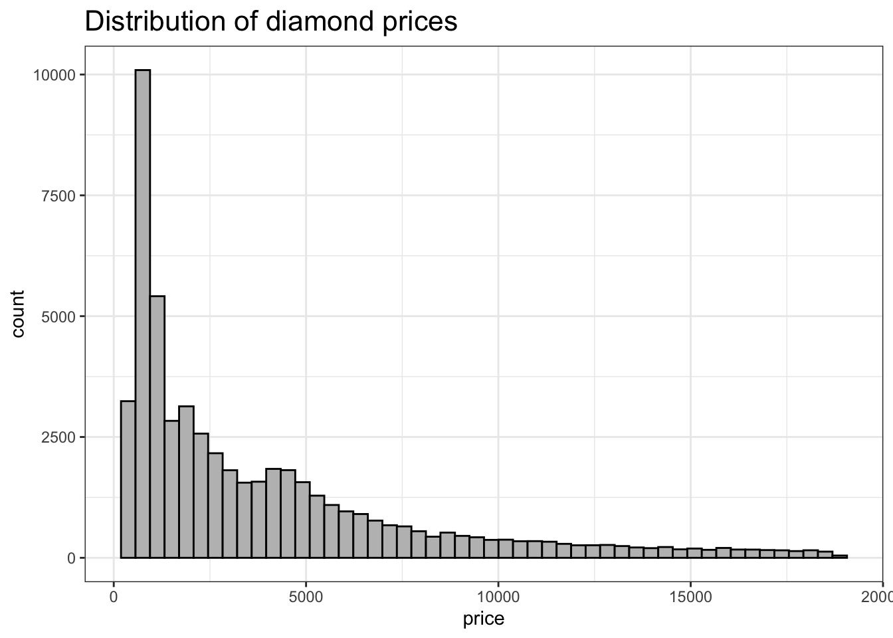
The distribution looks highly right skewed. We will keep this in mind during modeling.
Assess collinearity of variables in the dataset
df_numeric <- df %>% select(price, table, depth, x,y,z,carat)
cor_matrix <- cor(df_numeric, use="complete.obs") #####
ggcorrplot(cor_matrix, type = "upper",
lab = TRUE, lab_size = 3, hc.order = FALSE,
title = "Variable correlation matrix") +
theme(plot.title = element_text(size=16))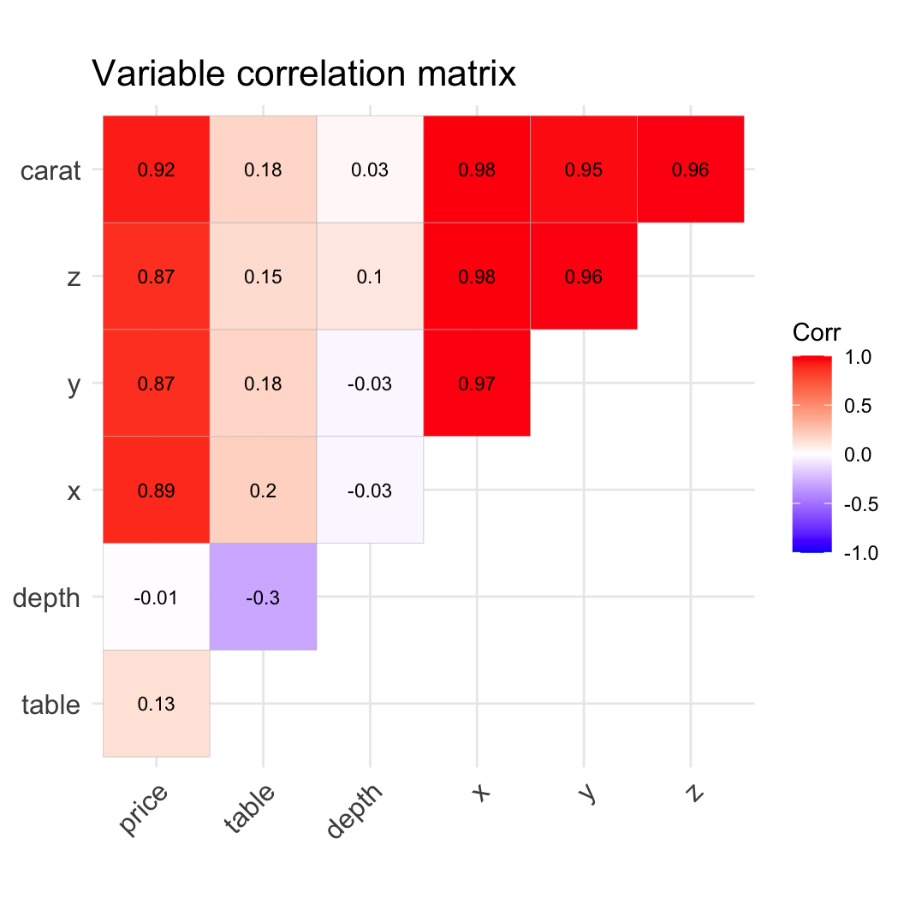
X,Y,Z carat and price are all highly correlated. This is not very surprising, but we will need to take this into account when modeling. Let’s look at these relationships in a bit more detail with some scatterplots.
Make exploratory scatterplots
pairs.panels(df %>% select(price, carat, x, y, z),
cex = 0.5, # Point size (smaller values = smaller points)
col = "red", # Point color
cex.cor = 0.8, # Correlation text size
cex.axis = 1.2, # Axis text size
cex.labels = 1.5) # Variable label size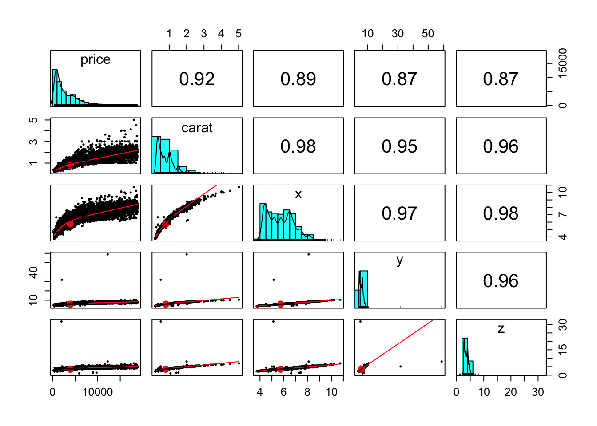
The scatterplots show a non-linear relationship between price, carat, and x. Among x,y there appears to be a linear relationship. Given that carat is highly correlated with x,y, and z, I think I can probabaly just use carat as a predictdor associated with diamond size, and I will need to find a way to model the non-linear relationship between carat and price (x).
Next let’s look at the relationship between price and the factor variables.
Make boxplots to assess the relationship between price and factor variables
#| fig.align: center
vars <- c("cut", "color", "clarity")
plot_list <- list()
for (i in 1:length(vars)) {
p <- ggplot(df, aes(x=.data[[vars[i]]], y=price)) +
geom_boxplot(fill=i+1) + # Note outliers are removed
theme_bw() +
theme(axis.text.x = element_text(angle = 45, hjust=1),
axis.title.y = element_text(size=14)) +
labs(title=vars[i], x="")
# remove y axis titles in 2nd and 3rd plots
if (i != 1) {p <- p + theme(axis.title.y = element_blank())}
plot_list[[i]] <- p}
plot_grid(plot_list[[1]], plot_list[[2]], plot_list[[3]], ncol = 3)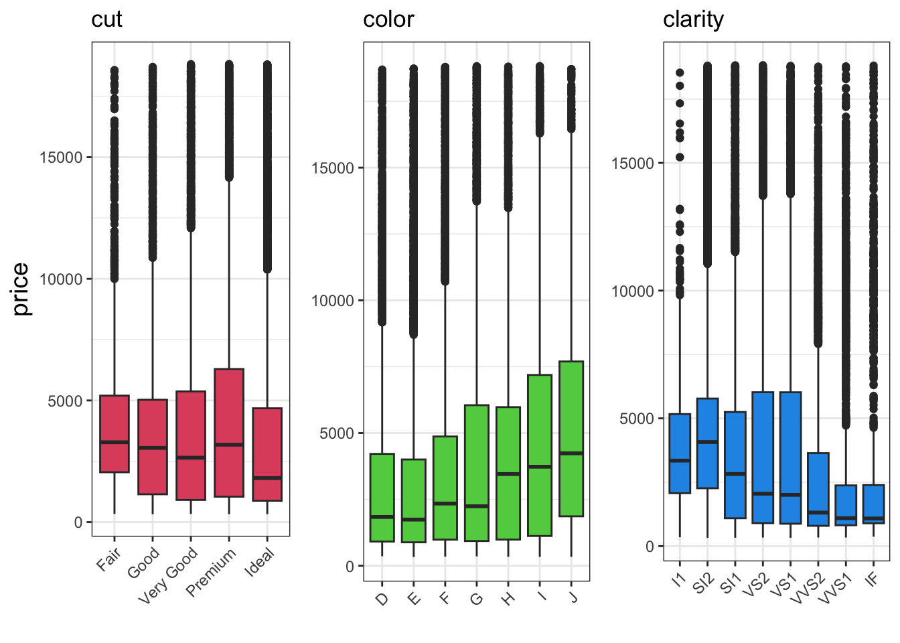
Interesting. It looks like overall price decreases with improved cut, increases with more color, and decreases with clarity. This is all a bit surprising. I will need to keep this in mind and assess whether these relationships are confounded by any other variables in the dataset.
Okay, so what have we learned from our exploratory analysis?
The price distribution is highly right skewed. Most diamonds are relativley cheap, and there are relatively few that command very high prices.
Price, carat, and each size dimension are all very highly correlated. This correlation is clearly non-linear for x vs. price and carat vs. price.
We observed a counter-intuitive relationship between price and cut, color, and clarity.
Now that we’ve finished our exploratory analysis, let’s get to our research questions!
What are the determinants of diamond price?
Given our exploratory analysis, it seems like diamond size / carat (weight) is a primary determinant of price. Since carat should be a function of x,y and z, we’ll use carat as the predictor variable. We also saw that the relationship between carat and price is not linear. Let’s build some simple models and see how well we can model price as a function of carat.
Plot price vs carat to more closely visualize this relationship
p <- ggplot(df, aes(x=carat, y=price)) +
geom_point(alpha=.4) +
geom_smooth(method = "gam") +
theme_bw()
# add distributions
ggMarginal(p, type="histogram", bins=30, fill="grey")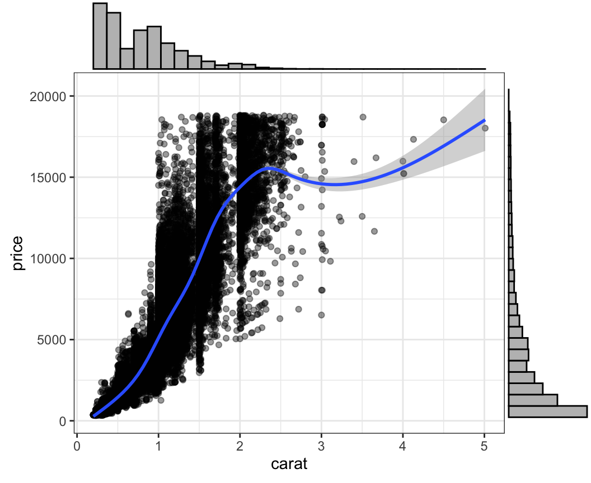
What does the scatterplot tell us? Well, the relationship doesn’t look linear, as we saw above. From 0 to 1 carat, the price increases by 5k, and from 1 to 2 carats, price increases by ~10k. It then starts to level off after that, but there are relatively few observations with price > 15k. What sort of a function might fit this data? Let’s look at some common relationships that can be modeled with OLMs that might fit these data.
Create and display table of common relationships
Relationship <- c("Linear", "Power-law", "Exponential", "Logarithmic", "Reciprocal", "Polynomial")
Form <- c("y = a + Bx", "y = ax^B", "y = ae^Bx", "y = a + B*log(x)", "y = a+ B/x", "y = a + Bx + Cx^2")
When_Linear <- c("always", "log(y) = log(x)", "log(y) = x", "y = log(x)", "y = 1/x", "never exactly")
Example <- c("simple relationship", "growth / decay between linear and exponential", "uncontrolled population growth, PCR amplificaiton", "diminishing returns, sensory adaptation", "drug concentration decay", "complex relationships")
d <- data.frame(Relationship, Form, When_Linear, Example)
kbl(d) %>% kable_styling(font_size=14, bootstrap_options = c("striped"))| Relationship | Form | When_Linear | Example |
|---|---|---|---|
| Linear | y = a + Bx | always | simple relationship |
| Power-law | y = ax^B | log(y) = log(x) | growth / decay between linear and exponential |
| Exponential | y = ae^Bx | log(y) = x | uncontrolled population growth, PCR amplificaiton |
| Logarithmic | y = a + B*log(x) | y = log(x) | diminishing returns, sensory adaptation |
| Reciprocal | y = a+ B/x | y = 1/x | drug concentration decay |
| Polynomial | y = a + Bx + Cx^2 | never exactly | complex relationships |
Comparing the trends in our data to the table, it looks like our data might fit a power-law, exponential, or polynomial better than a linear one. Let’s put this thought on a hold for a moment and just start by modeling out data with a simple linear relationship. We don’t expect this to be an ideal model but it will give us a good place to start.
Build first simple model
model1 <- lm(price ~ carat, data=df)
summary(model1)
Call:
lm(formula = price ~ carat, data = df)
Residuals:
Min 1Q Median 3Q Max
-18582.6 -804.6 -18.9 537.0 12731.8
Coefficients:
Estimate Std. Error t value Pr(>|t|)
(Intercept) -2255.77 13.05 -172.8 <2e-16 ***
carat 7755.77 14.07 551.3 <2e-16 ***
---
Signif. codes: 0 '***' 0.001 '**' 0.01 '*' 0.05 '.' 0.1 ' ' 1
Residual standard error: 1548 on 53918 degrees of freedom
Multiple R-squared: 0.8493, Adjusted R-squared: 0.8493
F-statistic: 3.039e+05 on 1 and 53918 DF, p-value: < 2.2e-16The model has an R2 of .84. which is not bad, but let’s look at some diagnostic plots.
Plot RvF and QQ plots
p1 <- autoplot(model1)[[1]] + theme_bw()
p2 <- autoplot(model1)[[2]] + theme_bw()
plot_grid(p1, p2, ncol = 2)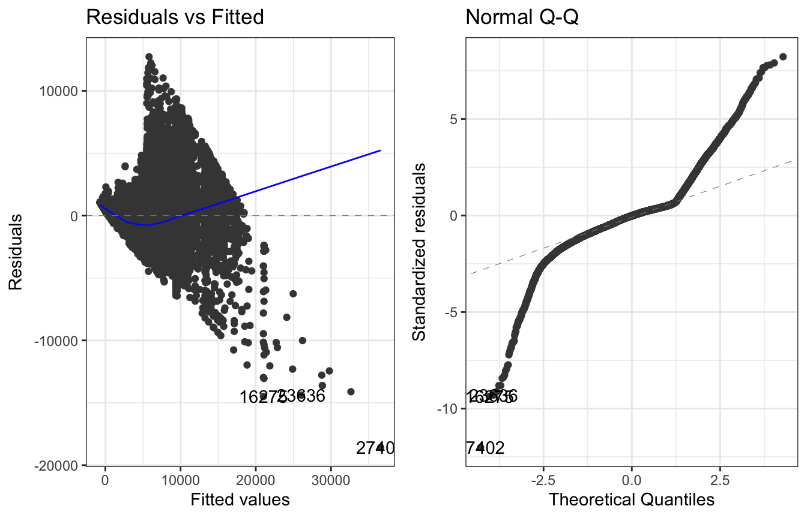
From these plots we can see that our fitted values are underestimating the true values when price is between ~5k and 15k, then overestimating the true values when price is ~15k+. Furthermore, the QQ plots tell us that our residual distribution has very long tails on both the left and right, and is not at all normal. Overall, we really want to try and improve our model fit so that the RvF show a more symmetrical distribution of points around y=0 and the QQ plot shows a distribution of residual values that is much more normal.
Let’s see whether an exponential model might fit these data better. To assess this we’ll first make a scatterplot and look for linearity between carat and ln(price).
Plot ln(price) as a function of carat
p <- ggplot(df, aes(x=carat, y=log(price))) +
geom_point(alpha=.4) +
geom_smooth(method = "gam") +
theme_bw()
ggMarginal(p, type="histogram", bins=30, fill="grey")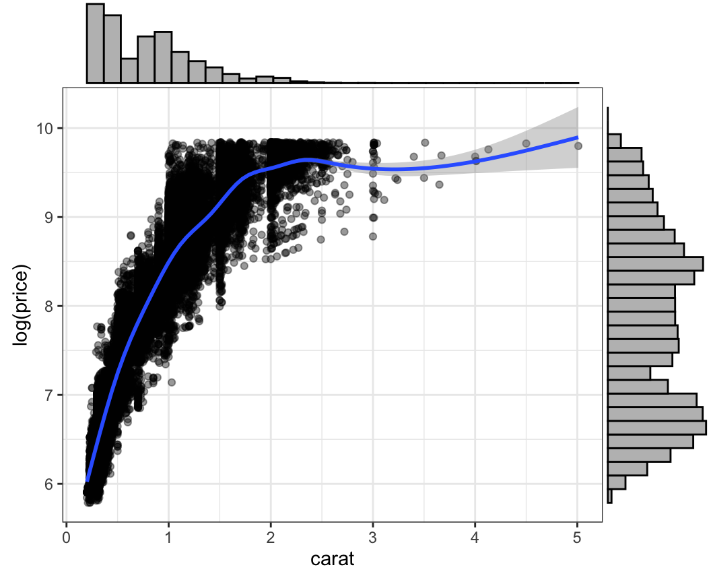
This doesn’t seem much better, but let’s try fitting a model anyway to see how the the R2 and residuals are affected.
Fit the exponential model
model_exp <- lm(log(price) ~ carat, data=df)
summary(model_exp)
Call:
lm(formula = log(price) ~ carat, data = df)
Residuals:
Min 1Q Median 3Q Max
-6.2878 -0.2446 0.0332 0.2577 1.5639
Coefficients:
Estimate Std. Error t value Pr(>|t|)
(Intercept) 6.214495 0.003348 1856.1 <2e-16 ***
carat 1.970542 0.003609 546.1 <2e-16 ***
---
Signif. codes: 0 '***' 0.001 '**' 0.01 '*' 0.05 '.' 0.1 ' ' 1
Residual standard error: 0.397 on 53918 degrees of freedom
Multiple R-squared: 0.8469, Adjusted R-squared: 0.8469
F-statistic: 2.982e+05 on 1 and 53918 DF, p-value: < 2.2e-16The R2 is basically the same as model1, so this is clearly not an improvement. Let’s next explore a power-law relationship.
Plot ln(price) as a function of ln(carat)
p <- ggplot(df, aes(x=log(carat), y=log(price))) +
geom_point(alpha=.4) +
geom_smooth(method = "gam") +
theme_bw()
ggMarginal(p, type="histogram", bins=30, fill="grey")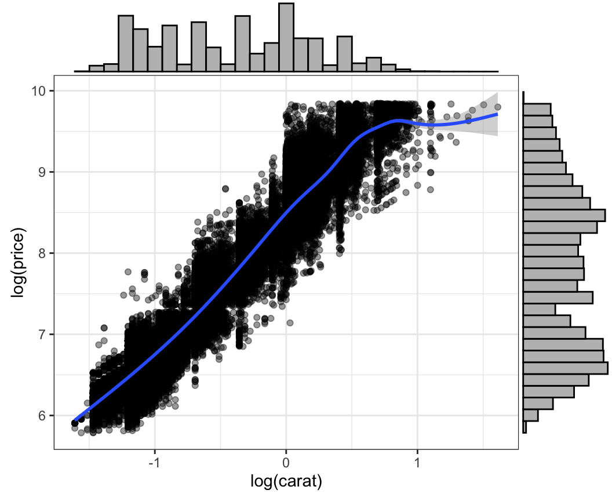
Wow this looks great! It seems that price and carat have a power-law relationship. This means that price increases more than linearly as a function of carat, but not exponentially. Let’s fit a model with a power-law relationship.
Fit a power-law model
model_powerlaw <- lm(log2(price) ~ log2(carat), data=df)
summary(model_powerlaw)
Call:
lm(formula = log2(price) ~ log2(carat), data = df)
Residuals:
Min 1Q Median 3Q Max
-2.17633 -0.24455 -0.00857 0.23994 1.93026
Coefficients:
Estimate Std. Error t value Pr(>|t|)
(Intercept) 12.188967 0.001969 6189.6 <2e-16 ***
log2(carat) 1.675908 0.001934 866.5 <2e-16 ***
---
Signif. codes: 0 '***' 0.001 '**' 0.01 '*' 0.05 '.' 0.1 ' ' 1
Residual standard error: 0.3789 on 53918 degrees of freedom
Multiple R-squared: 0.933, Adjusted R-squared: 0.933
F-statistic: 7.509e+05 on 1 and 53918 DF, p-value: < 2.2e-16This model is a substantial improvement. We can now explain 93.3% of the variation in diamond price using carat as the sole predictor. Let’s look at our diagnostic plots again.
Examine RvF and QQ plots for the power-law model
p1 <- autoplot(model_powerlaw)[[1]] + theme_bw()
p2 <- autoplot(model_powerlaw)[[2]] + theme_bw()
plot_grid(p1, p2, ncol = 2)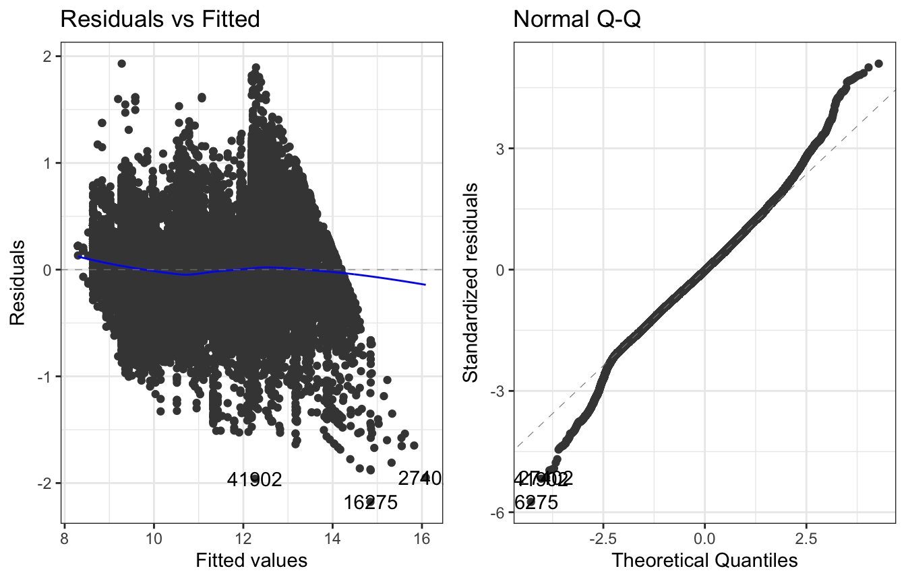
These plots show a major improvement over model1, as expected. However we are still overestimating the price at the high end of the price range, and our residual distribution still has tails longer than a normal distribution. Let’s see if we can get an even better model by adding some extra parameters.
To do this, we’ll first investigate if there is a meaningful relationship between the residuals of the power-law model, and several of the other variables in the dataset.
Make residual vs grouping plots
# get the residuals of the model. This returns the residual for every price value in the df in order of the df rows
plot_df <- df
plot_df$residuals <- residuals(model_powerlaw)
vars <- c("cut", "color", "clarity")
plots = list()
# now plot these residuals against other variables in the dataset
for (i in 1:length(vars)) {
p <- ggplot(plot_df, aes(x=.data[[vars[i]]], y=residuals)) +
geom_boxplot(fill=i+1) +
theme_bw()
plots[[i]] <- p}
# make a plot for the table variable
plots[[i+1]] <- ggplot(plot_df, aes(x=table, y=residuals)) +
geom_point(alpha=.4, size=1.5) + theme_bw()
# display the plots
plot_grid(plots[[1]], plots[[2]], plots[[3]], plots[[4]])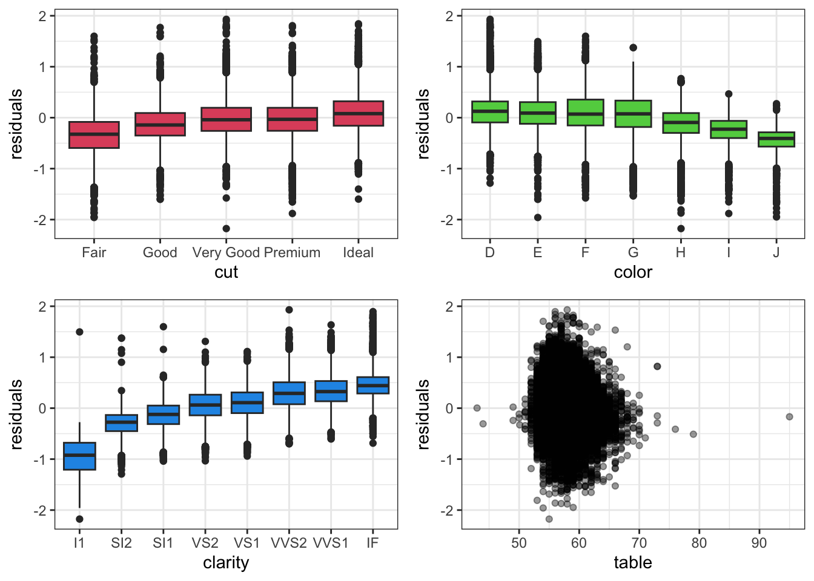
It looks like there is a relationship between cut, color, and clarity, and the output variable, price:
The model is underestimating the price of ideal cut diamonds
The model is overestimating the price of colored (not clear) diamonds.
The model is underestimating the price of clear diamonds.
These relationships go in a direction that makes logical sense, in contrast to the boxplots above where we saw, e.g. that better cut diamonds have lower prices. It therefore appears that these variables were confounded with carat, but now that our model accounts for the relationship between price and carat, the residuals of this model allow us to see the true relationship between price and cut, color, and clarity. Let’s check if this is the case by plotting cut, color, and clarity against carat.
Plot cut, clarity, and color against carat
vars <- c("cut", "color", "clarity")
plots = list()
# make the plots of each property vs carat
for (i in 1:length(vars)) {
p <- ggplot(plot_df, aes(x=.data[[vars[i]]], y=carat)) +
geom_boxplot(fill=i+1) +
theme_bw() +
theme(axis.text.x = element_text(angle = 45, hjust = 1))
plots[[i]] <- p}
# display the plots
plot_grid(plots[[1]], plots[[2]], plots[[3]], ncol=3)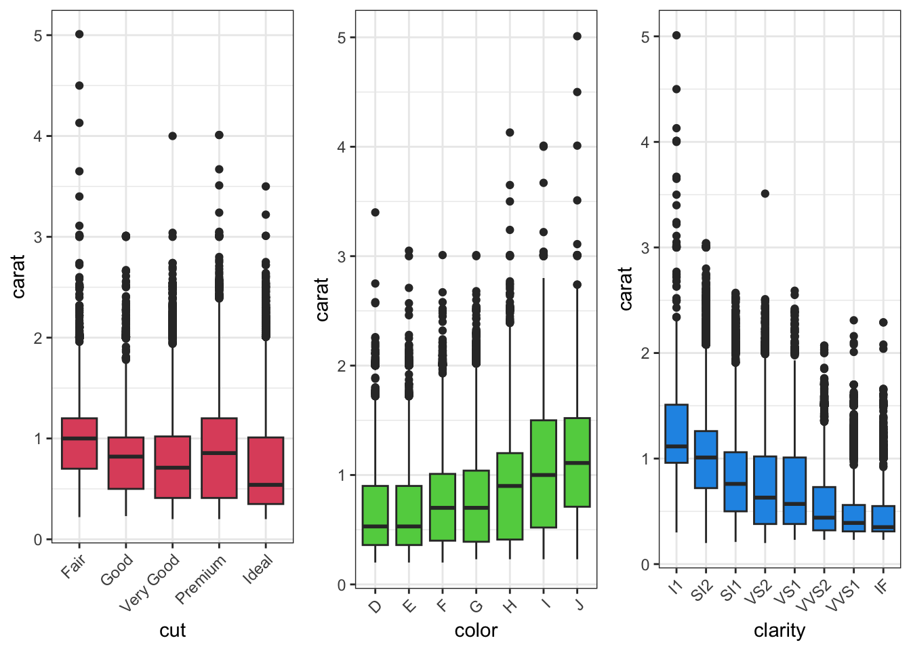
As expected, smaller diamonds have better cuts, better color, and greater clarity. This explains why we saw this same relationship between cut, color, and clarity and the output variable price when we first assessed this relationship: since carat is such a strong predictor of price it was confounding the true relationships between other predictors and price. Okay, now that we are convinced these three variables are predictors of price, let’s add them to our model.
A note on adding ordered factor variables to models. By default, R applies polynomial contrasts to ordered factor variables in a model and calculates coefficients as such. What does this mean, and what types of different contrasts are there?
- Treatment contrasts - This is the default for variable other than non-ordered factors. When this is used, each coefficient is calculated relative to a reference level, with the reference being the (alphabetically) first level.
- Sum contrasts (aka deviation coding) - This determines coefficients relative to the mean of all levels. It does this by forcing the sum of all coefficients to equal 0.
- Polynomial contrasts - This is used for ordered factors and tests for trends across levels. It assumes equal spacing across levels. These coefficients can be harder to interpret.
For our usage here, we do not want the factor variables to use polynomial contrasts. To override this default behavior, we will explicitly define these variables as treatment contrasts within the dataframe (df).
Make a fourth model that incorporates cut, color, and clarity as predictors
# Set contrasts within dataframe
contrasts(df$color) <- contr.treatment
contrasts(df$cut) <- contr.treatment
contrasts(df$clarity) <- contr.treatment
model4 <- lm(log(price) ~ log(carat) + color + cut + clarity, data=df)
print(summary(model4))
Call:
lm(formula = log(price) ~ log(carat) + color + cut + clarity,
data = df)
Residuals:
Min 1Q Median 3Q Max
-1.01111 -0.08636 -0.00031 0.08342 1.94779
Coefficients:
Estimate Std. Error t value Pr(>|t|)
(Intercept) 7.856821 0.005765 1362.89 <2e-16 ***
log(carat) 1.883745 0.001129 1668.53 <2e-16 ***
colorE -0.054226 0.002118 -25.60 <2e-16 ***
colorF -0.094546 0.002142 -44.13 <2e-16 ***
colorG -0.160207 0.002097 -76.41 <2e-16 ***
colorH -0.251054 0.002225 -112.83 <2e-16 ***
colorI -0.372515 0.002492 -149.48 <2e-16 ***
colorJ -0.510951 0.003074 -166.24 <2e-16 ***
cutGood 0.080137 0.003892 20.59 <2e-16 ***
cutVery Good 0.117243 0.003620 32.39 <2e-16 ***
cutPremium 0.139403 0.003580 38.94 <2e-16 ***
cutIdeal 0.161269 0.003549 45.44 <2e-16 ***
claritySI2 0.427897 0.005187 82.49 <2e-16 ***
claritySI1 0.592905 0.005158 114.94 <2e-16 ***
clarityVS2 0.742110 0.005187 143.07 <2e-16 ***
clarityVS1 0.812202 0.005266 154.23 <2e-16 ***
clarityVVS2 0.947201 0.005427 174.52 <2e-16 ***
clarityVVS1 1.018593 0.005584 182.41 <2e-16 ***
clarityIF 1.113650 0.006038 184.43 <2e-16 ***
---
Signif. codes: 0 '***' 0.001 '**' 0.01 '*' 0.05 '.' 0.1 ' ' 1
Residual standard error: 0.1338 on 53901 degrees of freedom
Multiple R-squared: 0.9826, Adjusted R-squared: 0.9826
F-statistic: 1.693e+05 on 18 and 53901 DF, p-value: < 2.2e-16We now have a model that explains ~98% of the variation in price as a function of carat, cut, color and clarity. While this is a pretty good model, let’s check out RvF and QQ plots.
Check diagnostic plots for model4
p1 <- autoplot(model4)[[1]] + theme_bw()
p2 <- autoplot(model4)[[2]] + theme_bw()
plot_grid(p1, p2, ncol = 2)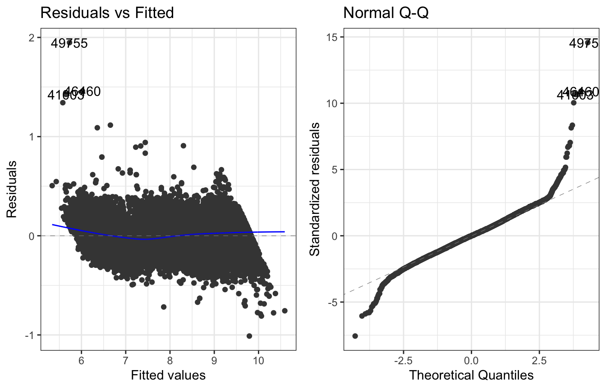
These plots are looking pretty good! Let’s now do some additional checks to assess the stability of our model and the potential for it to be overfit to the data. First we will test for stability by determining if any of the predictors are substantially collinear. We will do this using vif. Vif works by iterating through each predictor variable and trying to predict the values of that predictor via a linear model containing the remaining predictors. A high R2 for this model indicates substantial correlation among predictors. Vif will report these values for each predictor as 1 / (1 - R2). Vif values can be interpreted as follows:
< 2.5: No problem
2.5-5: Moderate correlation (usually okay)
5-10: High correlation (concerning)
> 10: Severe multicollinearity (problematic)
> 100: Extreme multicollinearity (likely data leakage)
Use Vif to test for multicollinearity
vif_values <- vif(model4)
print(vif_values) GVIF Df GVIF^(1/(2*Df))
log(carat) 1.312871 1 1.145806
color 1.139994 6 1.010978
cut 1.105702 4 1.012639
clarity 1.323472 7 1.020220The value we care about in the table is the adjusted GVI (the last column). The adjusted values makes values comparable among factor varaibles and continuous variables. Since all of the values are low, we do not need to be concerned about multicollinearity among our predictors.
Next, let’s test for overfitting using cross validation.
Set up the cross validation test
# This tells caret HOW to do the cross-validation
cv_control <- trainControl(
method = "cv", # Use cross-validation (not bootstrap, etc.)
number = 10, # Split data into 10 pieces (10-fold CV)
savePredictions = "final", # Keep the predictions for later analysis
verboseIter = FALSE) # Don't progress as it runsNo we will run the cross validation test. This will split the data into 10 equal parts, then run 10 iteratins in which it:
- Fits parameter values of the model on 9/10 parts
- Uses the model with the fit parameter values to predict the prices of diamonds in the last part
- Determines the R2 of the model when predicting the price of the diamonds in the last part
- Iterate again, using a distinct set of 9 parts for training and a distinct set for predicting
- Average the R2 values from each of the 10 iterations
If the average R2 of the model tests is substantially worse than the R2 obtained above during model training on the entire dataset (.982) this would be evidence of overfitting and poor prediction ability.
Run the cross validation test
# Set seed for reproducible results
set.seed(123)
# Specify the factor variables as contrasts in the df so that caret can handle them.
# Unlike lm(), caret cannot hanlde "C(df$VARIABLE, treatment)"
df$color_treatment <- C(df$color, treatment)
df$cut_treatment <- C(df$cut, treatment)
df$clarity_treatment <- C(df$clarity, treatment)
# Specify the model we want to validate
model_formula <- log(price) ~ log(carat) + color_treatment + cut_treatment + clarity_treatment
# Run cross-validation
cv_model <- train(
model_formula, # What to predict and with what
data = df, # Your data
method = "lm", # Use linear regression (same as lm())
trControl = cv_control, # How to do CV
metric = "RMSE" # What to optimize (could be "Rsquared" instead)
)
# Look at results
print(cv_model)Linear Regression
53920 samples
4 predictor
No pre-processing
Resampling: Cross-Validated (10 fold)
Summary of sample sizes: 48528, 48529, 48527, 48527, 48528, 48528, ...
Resampling results:
RMSE Rsquared MAE
0.1337911 0.9826105 0.1040117
Tuning parameter 'intercept' was held constant at a value of TRUEThe RMSE and R2 values reported are the average across each of the 10 train/test iterations. They look good, but let’s directly compare to them to our original model, model4.
Compare RMSE values between model4 and the cross-validation result
labels <- c("model4", "cv_model")
residuals_model4 <- sqrt(mean(residuals(model4)^2))
residuals_cv_model <- cv_model$results$RMSE
r2_cv_model <- cv_model$results$Rsquared
r2_model4 <- summary(model4)$r.squared
rmse <- c(residuals_model4, residuals_cv_model)
r2 <- c(r2_model4, r2_cv_model)
comparison_df <- as.data.frame(rbind(rmse, r2))
rownames(comparison_df) <- c("RMSE", "R_squared")
colnames(comparison_df) <- c("model4", "cv_model")
comparison_df <- mutate(comparison_df, '% different' = round((model4/cv_model -1)*100,3))
kbl(comparison_df) %>% kable_styling(bootstrap_options = c("striped"), full_width=FALSE)| model4 | cv_model | % different | |
|---|---|---|---|
| RMSE | 0.1337621 | 0.1337911 | -0.022 |
| R_squared | 0.9826166 | 0.9826105 | 0.001 |
The average RMSE and R2 of the fitted values in our cross validation are very similar to model4 which was fitted on the entire dataset. This suggests that our model is not overfit, and is suitable for accurate prediction of values not in the training set. Note that this only tells us that the structure of the model (i.e. the specific combination of predictor variables) is not overfit; it does not say anything about the actual coefficients and how stable they are (Remember that unstable coefficients can result from multicollinearity or datapoints with high leverage). To test for instability of coefficients we would perform bootstrap sampling and assess how stable the coefficients are across different training sets.what ab
Okay, so we’ve determined that our model does a good job of predicting diamond price, and that there are no issues with collinearity (unstable coefficients) or overfitting. Let’s finally determine the extent to which changes in each predictor impact diamond price.
Before we do this, let’s first discuss how coefficients of continuous predictor variables be interpreted in different forms of models:
- y = x: the coefficient of x represents the unit change in y per unit change in x.
- log(y) = x: the coefficient represents the approximate percent change in y per unit change in x.
- log(y) = log(x): the coefficient represents the percent change in y per a 1% change in x.
Note that these relationships hold regardless of the base of the log.
Note also that these relationships are not valid in the contexto of factor variables!
Given this, let’s calculate the % change in price given a 1% change in carat. This is easy to determine as it is just the coefficient associated with log(carat) in our model.
Get the coefficient estimate for carat and print its effect on price
carat_effect <- tidy(model4) %>% filter(grepl("carat", term)) %>% pull(estimate) %>% round(2)
print(paste0("A 1% increase in carat results in a ", carat_effect, "% increase in diamond price"))[1] "A 1% increase in carat results in a 1.88% increase in diamond price"Next, let’s calculate the % effect for each of the factor variables. To understand what the coefficients mean for factor variables, consider this:
- y = factor(x); Assume sum contrasts: The coefficient represents the unit difference in y between a factor level and the grand mean of all factor levels.
- log(y) = factor(x); Assume sum contrasts: The coefficient represents the log difference between a factor level and the grand mean. To get the percent difference from the grand mean: (exp(coefficient) - 1) × 100%.
Okay, so we see here that in order to get the proportional change in y associated with each factor, we need to exponentiate the factor coefficient and subtract 1.
Make a function and get model data using emmeans
get_factor_effects <- function(model, factor_name) {
emmeans(model, factor_name) %>%
contrast("eff", adjust = "none") %>% #Set 'effect' contrast to get diff from grand mean
summary(infer = TRUE) %>%
as.data.frame() %>%
mutate("estimate(%)" = round((exp(estimate)-1)*100, 2),
"low CI(%)" = round((exp(lower.CL) - 1) * 100, 2),
"upper_CI(%)" = round((exp(upper.CL) - 1) * 100, 2)) %>%
select("estimate(%)", "low CI(%)", "upper_CI(%)")}
# Call the function for each factor variable
cut_effects <- get_factor_effects(model4, "cut")
color_effects <- get_factor_effects(model4, "color")
clarity_effects <- get_factor_effects(model4, "clarity")
# Make a table with all of the effects data
effects_df <- rbind(cut_effects, color_effects, clarity_effects)
Print a table with results
kable(effects_df) %>% kable_styling(bootstrap_options = c("striped"), full_width=FALSE) %>%
pack_rows("Cut Effects", 1, nrow(cut_effects)) %>%
pack_rows("Color Effects", nrow(cut_effects)+1, nrow(cut_effects)+nrow(color_effects)) %>%
pack_rows("Clarity Effects", nrow(cut_effects)+nrow(color_effects)+1, nrow(effects_df))| estimate(%) | low CI(%) | upper_CI(%) |
|---|---|---|
| Cut Effects | ||
| -9.48 | -9.97 | -8.99 |
| -1.93 | -2.26 | -1.60 |
| 1.78 | 1.52 | 2.04 |
| 4.06 | 3.81 | 4.31 |
| 6.36 | 6.12 | 6.60 |
| Color Effects | ||
| 22.90 | 22.53 | 23.27 |
| 16.41 | 16.11 | 16.72 |
| 11.81 | 11.52 | 12.11 |
| 4.71 | 4.45 | 4.97 |
| -4.38 | -4.65 | -4.12 |
| -15.32 | -15.60 | -15.04 |
| -26.27 | -26.59 | -25.94 |
| Clarity Effects | ||
| -50.68 | -51.11 | -50.25 |
| -24.34 | -24.57 | -24.11 |
| -10.77 | -11.01 | -10.53 |
| 3.59 | 3.31 | 3.87 |
| 11.11 | 10.77 | 11.45 |
| 27.17 | 26.71 | 27.64 |
| 36.58 | 36.01 | 37.16 |
| 50.20 | 49.34 | 51.07 |
No we can see the percent change associated with each level of each of the factor variables in our model. This shows us that, of these three factors, clarity has by far the largest effect on price.